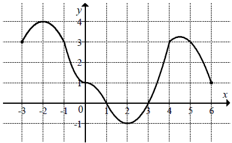

Matura 2013 marzec
Liczba \(-3^2 - (-2 - 2^{-1})^2\) jest równa
A. \( -\frac{61}{4} \)
B. \( -\frac{11}{4} \)
C. \( \frac{11}{4} \)
D. \( \frac{61}{4} \)
A
Iloraz \(125^5:5^{11}\) jest równy
A. \(5^{-6}\)
B. \(5^{16}\)
C. \(25^{-6}\)
D. \(25^2\)
D
Wskaż liczbę, która spełnia nierówność \(|3x-4|\le x+1\).
A. \(-2\)
B. \(-1\)
C. \(0\)
D. \(1\)
D
W ciągu arytmetycznym \((a_n)\) suma trzydziestu początkowych wyrazów tego ciągu
jest równa \(1245\) oraz \(a_1=-2\). Wtedy
A. \(a_{30}=81\)
B. \(a_{30}=85\)
C. \(a_{30}=175\)
D. \(a_{30}=1247\)
B
Promień okręgu opisanego na trójkącie równobocznym jest równy \(
\frac{16\sqrt{3}}{3} \). Obwód tego trójkąta jest równy
A.\(16\)
B.\(32\)
C.\(48\)
D.\(64\)
C
Zbiorem wartości funkcji przedstawionej na rysunku jest przedział 
A.\(\langle -3,6 \rangle\)
B.\(\langle -1,4 \rangle\)
C.\((1,3)\)
D.\((-2,2)\)
B
Klasa liczy \( 20\) chłopców i \(12\) dziewcząt. Liczba dziewcząt jest mniejsza od
liczby chłopców o
A.\(25\%\)
B.\(40\%\)
C.\(60\%\)
D.\(67\%\)
B
Liczba \(-2\) jest pierwiastkiem wielomianu \(W(x)=-x^3+2x^2-ax-4\) . Wynika stąd,
że
A.\(a=-6\)
B.\(a=-2\)
C.\(a=2\)
D.\(a=4\)
A
Na okręgu o środku \(S=(-6,1)\) leży punkt \(A=(-2,4)\). Promień tego okręgu jest
równy
A.\(5\)
B.\(7\)
C.\(\sqrt{73}\)
D.\(\sqrt{7}\)
A
W trapezie równoramiennym, który nie jest równoległobokiem, kąty przy ramieniu
różnią się o \(50^\circ \). Kąt przy krótszej podstawie tego trapezu jest równy
A.\(115^\circ \)
B.\(120^\circ \)
C.\(125^\circ \)
D.\(130^\circ \)
A
Ciąg geometryczny \( (a_n) \) jest określony wzorem \(a_n=2^{2n-1}\) dla \(n\ge
1\). Iloraz tego ciągu jest równy
A.\( \frac{1}{4} \)
B.\( \frac{1}{2} \)
C.\(2\)
D.\(4\)
D
Punkt \(A=(0,0)\) jest jednym z wierzchołków rombu \(ABCD\). Bok \(CD\) zawarty
jest w prostej o równaniu \(y=0{,}5x+3\). Wskaż równanie prostej zawierającej bok \(AB\) tego rombu
A.\( y=-\frac{1}{2}x \)
B.\( y=2x\)
C.\( y=\frac{1}{2}x \)
D.\( y=-2x\)
C
Dla \(x\ne -2\) i \(x\ne 2\) wyrażenie \( \frac{2x-1}{x-2}-\frac{1}{x+2} \) jest
równe
A.\( \frac{2x^2+2x-4}{x^2-4} \)
B.\( \frac{2x-2}{x^2-4} \)
C.\( \frac{x-1}{x} \)
D.\( \frac{2x^2+2x}{x^2-4} \)
D
Funkcja kwadratowa \(f(x)=-2(x-5)(x+1)\) jest malejąca w zbiorze
A.\((-1,5)\)
B.\( ( -\infty ,2 \rangle \)
C.\(\langle 2,+\infty )\)
D.\((-\infty ,-1)\cup (5,+\infty )\)
C
Wysokość graniastosłupa prawidłowego czworokątnego jest równa \(6\), a kąt
nachylenia jego przekątnej do płaszczyzny podstawy jest równy \(60^\circ \). Długość tej przekątnej
jest równa
A.\(3\)
B.\(\sqrt{3}\)
C.\(2\sqrt{3}\)
D.\(4\sqrt{3}\)
D
W pięciu kolejnych rzutach kostką do gry otrzymano następujące wyniki: \(6, 3, 5,
5, 6\). Odchylenie standardowe tych wyników jest równe
A.\( \frac{\sqrt{6}}{5} \)
B.\( \frac{\sqrt{30}}{5} \)
C.\( \frac{6}{5} \)
D.\(5\)
B
Wszystkich dodatnich liczb całkowitych czterocyfrowych mniejszych od \(4000\),
zapisanych za pomocą cyfr: \(3, 5, 7, 9\) tak, że żadna cyfra się nie powtarza, jest
A.\( 6 \)
B.\( 24 \)
C.\( 64 \)
D.\( 256 \)
A
Liczba \(2-2\log_{2}3\) jest równa
A.\( 0 \)
B.\( \log_{2}\frac{2}{9} \)
C.\( \log_{2}\frac{4}{9} \)
D.\( \log_{2}\frac{2}{3} \)
C
Punkt \(S\) jest środkiem wysokości \(CD\) trójkąta równoramiennego \(ABC\), w
którym \(|AC|=|BC|=5\) oraz \(|CD|=4\) (zobacz rysunek).  Odległość punktu \(S\) od ramienia tego trójkąta jest równa
Odległość punktu \(S\) od ramienia tego trójkąta jest równa
Odległość punktu \(S\) od ramienia tego trójkąta jest równa
A.\( \frac{6}{5} \)
B.\( \frac{3}{2} \)
C.\( \frac{12}{5} \)
D.\( \frac{5}{2} \)
A
Pole powierzchni bocznej walca, którego podstawa ma średnicę \(4\) jest równe
\(8\pi \). Wysokość tego walca jest równa
A.\( 8 \)
B.\( 4 \)
C.\( 2 \)
D.\( \frac{1}{2} \)
C
Rozwiąż nierówność \(-2x^2 + 0{,}5x \ge 0\).
\(x\in \left\langle 0;\frac{1}{4} \right\rangle \)
Punkty \(A = (-3, 4)\) i \(C = (1,3)\) są wierzchołkami kwadratu \(ABCD\). Wyznacz
równanie prostej zawierającej przekątną \(BD\) tego kwadratu.
\(y=4x+\frac{15}{2}\)
Kąty ostre \(\alpha \) i \(\beta \) trójkąta prostokątnego spełniają warunek \(\sin^{2} \alpha +\sin^{2}\beta +\operatorname{tg}^{2}\alpha =4\) . Wyznacz
miarę kąta \(\alpha \).
\(\alpha =60^\circ \)
Udowodnij, że dla dowolnych liczb rzeczywistych \(x\) i \(y\) prawdziwa jest
nierówność \[x^2+xy+y^2\ge 2x+2y-4\]
Rozwiąż równanie \(2x^3+3x^2+4x+6=0\) .
\(x=-\frac{3}{2}\)
Na odcinku \(AB\) wybrano punkt \(C\), a następnie zbudowano trójkąty równoboczne
\(ACD\) i \(CBE\) tak, że wierzchołki \(D\) i \(E\) leżą po tej samej stronie prostej \(AB\). Okręgi
opisane na tych trójkątach przecinają się w punktach \(C\) i \(P\) (zobacz rysunek).  Udowodnij, że miara kąta \(APB\)
jest równa \(120^\circ \).
Udowodnij, że miara kąta \(APB\)
jest równa \(120^\circ \).
Udowodnij, że miara kąta \(APB\)
jest równa \(120^\circ \).Promień okręgu opisanego na trójkącie prostokątnym jest równy \(2\sqrt{5}\). Jedna
z przyprostokątnych tego trójkąta jest o \(4\) dłuższa od drugiej przyprostokątnej. Oblicz wysokość
tego trójkąta opuszczoną na przeciwprostokątną.
\(h=\frac{8\sqrt{5}}{5}\)
W pojemniku jest osiem kul ponumerowanych od \(1\) do \(8\), przy czym kule z
numerami, których reszta z dzielenia przez \(3\) jest równa \(1\) są białe, a pozostałe kule są
czarne. Losujemy z pojemnika jednocześnie dwie kule. Oblicz prawdopodobieństwo zdarzenia
polegającego na tym, że wylosujemy kule różnych kolorów, których iloczyn numerów będzie większy od
\(6\) i nie większy od \(35\).
\(P(A)=\frac{9}{28}\)
Do zbiornika można doprowadzić wodę dwiema rurami. Czas napełniania zbiornika tylko
pierwszą rurą jest o \(5\) godzin i \(30\) minut krótszy od czasu napełniania tego zbiornika tylko
drugą rurą, natomiast \(15\) godzin trwa napełnienie tego zbiornika obiema rurami jednocześnie.
Oblicz, w ciągu ilu godzin pusty zbiornik zostanie napełniony, jeśli woda będzie doprowadzana tylko
pierwszą rurą.
\(27{,}5\) godziny
Piramida Cheopsa ma kształt ostrosłupa prawidłowego czworokątnego. Każda ściana
boczna jest nachylona do płaszczyzny podstawy ostrosłupa pod kątem \(52^\circ \), a pole powierzchni
ściany bocznej jest równe \(21\ 550 \) m2. Oblicz objętość
piramidy. Wynik zapisz w postaci \(a\cdot 10k\), gdzie \(1\le a\lt 10\) i
\(k\) jest liczbą całkowitą.
\(2{,}61\cdot 10^6\)